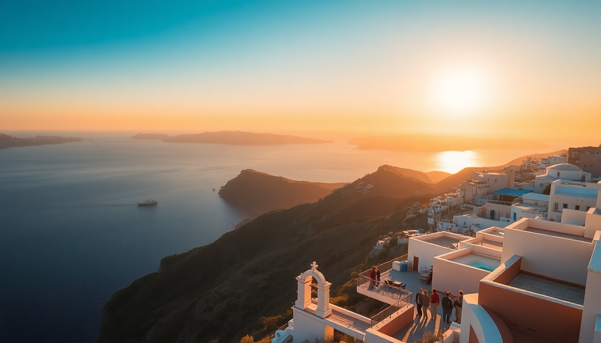

Where to Stay in Santorini: Best Caldera View Hotels

I spent a week in Santorini last June, hopping between three different hotels to figure out which caldera-view rooms actually deliver and which are just Instagram bait. The island’s west-facing cliffside is a row of infinity pools and whitewashed caves, but not all views are equal — and prices vary wildly for what you get. Here’s what I learned, neighborhood by neighborhood.
Which neighborhood has the best caldera views?
If you want the classic postcard shot — blue domes, white buildings, deep blue sea — you’re looking at Oia. But that comes with crowds. By 10 a.m., the main footpath is shoulder-to-shoulder with cruise-ship day-trippers. Fira is busier in a different way: more bars, more noise, but also more affordable options perched right on the caldera. Imerovigli, the quiet middle ground, sits higher up and offers the widest, most unobstructed panoramas. I found it the sweet spot for couples who want peace without isolation.
- Oia – Best for sunset photos and luxury resorts, but prepare for foot traffic.
- Imerovigli – My pick. Fewer crowds, higher elevation, better value per square meter of view.
- Fira – Convenient for nightlife and ferry connections, but rooms can feel cramped.
- Firostefani – A short walk from Fira, calmer, with solid mid-range options like San Antonio Suites.
Are the cave-style hotels worth the premium?
Yes and no. A true cave hotel (called yposkafa) is carved into the volcanic rock, meaning thick walls that stay cool in summer and a unique atmosphere you can’t replicate. I stayed at Andronis Concept Wellness Resort in Oia, and the cave suite felt like a private grotto with a plunge pool. The downside: cave rooms often have limited natural light and can feel damp. If you’re claustrophobic, skip the cave and book a room with a terrace instead.
- Andronis Concept – High-end cave experience with a good spa.
- Astra Suites in Imerovigli – Not a full cave, but built into the cliff with massive windows.
- Fanari Villas in Oia – Mid-range caves that don’t break the bank.
Which hotels actually have private infinity pools with a view?
Half the hotels in Santorini claim “infinity pool,” but many are shared or tiny. For a private plunge pool that looks straight down the caldera, I’d focus on Imerovigli and northern Fira. At Katikies Hotel in Oia, the main infinity pool is shared and stunning, but their suites with private pools book out months ahead. In Imerovigli, Grace Hotel Santorini (now an Auberge property) has a famous shared infinity pool, but the private-pool suites at Santorini Princess are more reliable for actual privacy.
- Katikies Hotel – Iconic shared pool; book a suite for private access.
- Santorini Princess – Solid private-pool suites at a lower price point than Katikies.
- Canaves Oia Suites – Split-level rooms with plunge pools and direct sunset views.
Is it worth staying in Fira instead of Oia?
Depends on your tolerance for tourists. Fira is the island’s capital — more restaurants, more ferry connections, and a livelier night scene. The caldera view from Aria Suites or Hotel Keti is just as dramatic as Oia’s, but you’re looking at the caldera’s central basin rather than the sunset horizon. I found Fira’s dining more varied: Mama’s House for cheap gyros, Naoussa for fresh seafood right on the edge. Oia’s restaurants are pricier and often booked solid at sunset.
- Aria Suites – Adults-only, caldera-facing, with a small pool.
- Hotel Keti – Budget-friendly with a decent caldera view from the terrace.
- Naoussa Restaurant – Good grilled octopus, no reservation needed at lunch.
What about the east coast? Is it cheaper?
Significantly. The east coast (Kamari, Perissa, Perivolos) has black-sand beaches and flat terrain — no caldera views at all. If you’re on a tight budget, Kamari offers beachfront hotels like Santellini Hotel for a fraction of Oia prices. But you’ll need a car or ATV to reach the caldera for sunset. I wouldn’t stay here unless you’re beach-focused or visiting in peak season when west-side prices triple.
- Santellini Hotel – Clean, modern, steps from Kamari beach.
- Santorini Kastelli Resort – Perissa, with a decent pool and lower rates.
- Rent an ATV from Kamari Rentals – About €25/day, essential for exploring.
Which hotels should I avoid for caldera views?
A few traps. Any hotel in Fira that says “partial caldera view” usually means you’ll see a sliver of blue between two buildings. I booked Hotel Thireas once — the “caldera view” room looked at a neighboring wall. Also avoid rooms in Oia listed as “sunset view” but located on the lower cliff path; you’ll get the sunset, but also every tourist’s selfie stick from the walkway above. Stick to properties with explicit “direct caldera view” in the room name.
- Hotel Thireas – Misleading “caldera view” category.
- Any Oia room on the lower path – Too much foot traffic overhead.
- Cheap studios in Fira town center – You’ll hear bar music until 2 a.m.
FAQ
How far in advance should I book a caldera-view hotel? At least 3 to 4 months for summer (June–September). For peak sunset rooms in Oia, book 6 months out. I booked my Imerovigli suite in January for a June stay and got a decent rate. Last-minute bookings in July often cost double.
Are caldera-view hotels accessible for people with mobility issues? Generally no. Most caldera hotels are built into cliffs with steep stairs and no elevators. I counted 120 steps down to my room at Andronis. If stairs are a concern, look at hotels in Fira that are closer to the main road, or east-coast properties with flat access.
Do all caldera-view rooms include sunset views? No. Only west-facing rooms see the sunset. The caldera curves, so some rooms in Fira face south or east and miss the sunset entirely. Check the room’s orientation on Google Maps or ask the hotel directly before booking.
Conclusion
- Imerovigli offers the best balance of views, quiet, and value — book Astra Suites or Santorini Princess.
- Oia delivers the iconic sunset, but you pay for crowds and noise — Katikies or Canaves Oia are worth the splurge.
- Fira is best for budget-conscious travelers who still want a caldera view — Aria Suites or Hotel Keti.
- Avoid “partial view” rooms and lower-path Oia rooms.
- Book 4–6 months ahead for summer, and always confirm the room faces west.